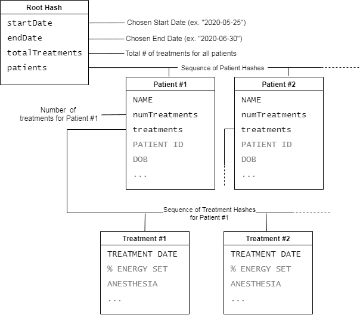
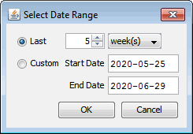

Patient Summary Reports
On this Page
Overview
This is a somewhat advanced feature that allows a user to generate a report that contains data from all the user's patient and treatment information. The basic idea is that GPD builds up a hierarchical data model that contains a sequence of all the user's patients, and for each patient, a sequence of that patient's treatments. This model is fed to a template that can output a report in any textual format (principally plain-text, XML, or HTML).
Data Model
The model is based on hashes, that map a key to a value. The hierarchy of hashes is presented in this diagram:

When you invoke the command to generate a patient summary report (in the Patient List, File menu→Generate Patient Summary Report…), you will be presented with a dialog to choose the date range for the report:

Only those treatments that occurred within the chosen date range will be considered when building the data model, and it is the start date and end date entered here that appear in the startDate and endDate keys of the root hash. The totalTreatments key contains the total number of treatments for all patients in the date range, and in the treatments key is a sequence of patient hashes.
Each of the patient hashes has all of the fields found in the patient info, for instance PATIENT ID, DOB, REFERRING PHYSICIAN, etc., as well as two other special keys: numTreatments, which contains the number of treatments for that patient in the chosen date range; and treatments, which is a sequence of treatment hashes.
Each treatment hash has all of the fields found in the treatment info – % ENERGY SET, EEG ENDPOINT, etc. – as well as TREATMENT DATE.
Report Template
In the Preferences window Templates tab is a button to edit the Patient Summary template. The template is in FreeMarker FTL format – FreeMarker is a powerful but complex templating engine that can be massaged into doing almost anything you need, but explaining its usage is far outside the scope of this manual. I'll give a relatively straightforward example below, and for any particular reporting needs you may have, please contact us at GPD@elektrika-inc.com.
In reading the below template, note that variables are referenced using the same ${VARIABLE} syntax as in GPD patient and treatment templates, and that keys of the patient and treatment hashes are referenced as ${patient["FIELD"]} and ${treatment["FIELD"]} respectively. Alternatively, if the FIELD name doesn't contain any spaces or punctuation, you can reference it as ${patient.FIELD} and ${treatment.FIELD} (as is done in the example below with ${patient.numTreatments}).
The template itself:
<#ftl output_format="plainText">
== Patient Treatment Summary (${startDate} to ${endDate}) ==
${totalTreatments} treatments were performed.
<#list patients as patient>
Patient ID: ${patient["PATIENT ID"]!"(no ID)"} [${patient.numTreatments} treatments]
Dates/Times:
<#list patient.treatments as treatment>
${treatment["TREATMENT DATE"]}
</#list>
<#sep>
</#sep>
</#list>The output of this template when run against patient data might be
== Patient Treatment Summary (2020-05-25 to 2020-06-30) ==
7 treatments were performed.
Patient ID: CARM31F
[4 treatments]
Dates/Times:
2020-06-01 11:15
2020-06-03 14:23
2020-06-05 09:32
2020-06-06 10:24
Patient ID: MILJ55M
[3 treatments]
Dates/Times:
2020-05-29 14:49
2020-05-30 13:11
2020-06-02 10:54